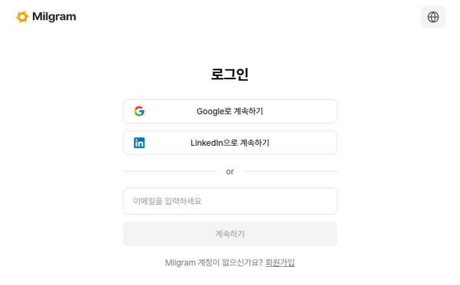
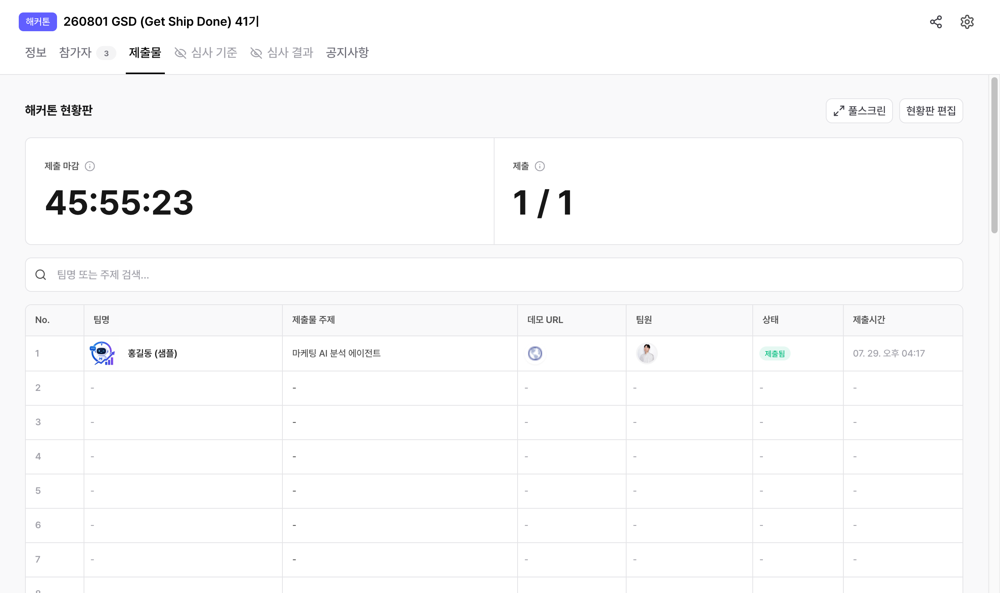
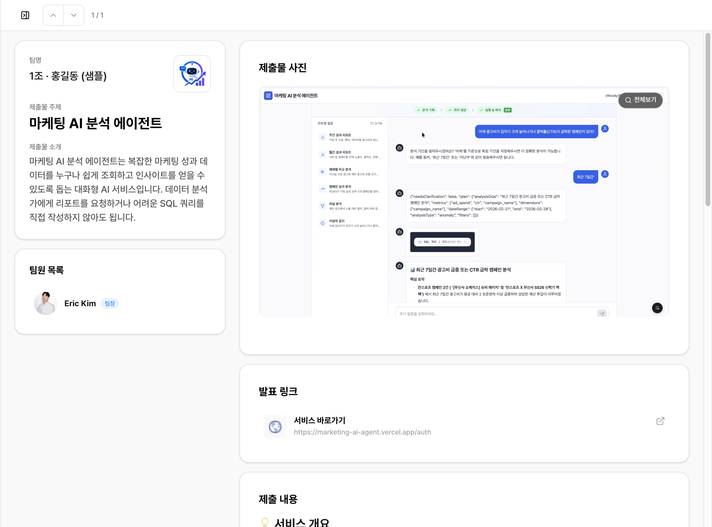
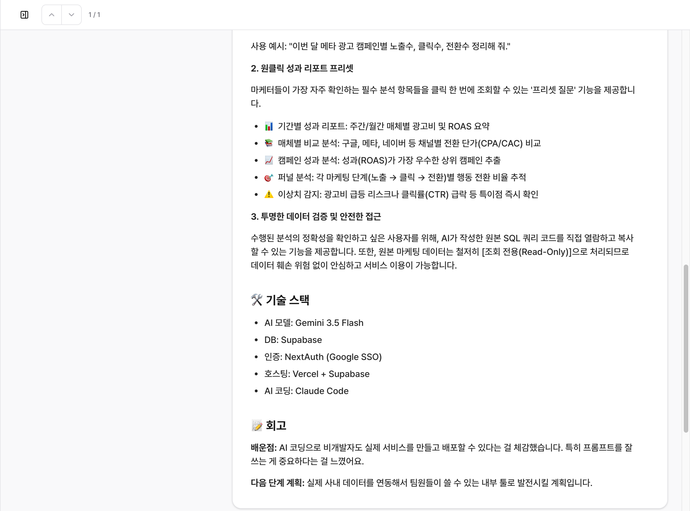

01먼저 확인할 것
딱 두 가지입니다. 나머지는 Claude가 알아서 준비합니다.
| 항목 | 왜 필요한가요 |
|---|---|
| Google Chrome | 제출 페이지에 접속하는 데 씁니다. Edge·Safari·Arc로는 안 됩니다. 없으면 google.com/chrome에서 설치해 주세요. |
| 이메일 계정 | 제출 페이지 로그인에 사용됩니다. 여러 개 쓰신다면 어느 것으로 할지만 정해두세요. |
신청이 안 되어 있으면 Claude가 대신 신청해 줍니다.
다만 이미 신청했다면 그때 쓴 계정으로 로그인해 주세요. 다른 계정으로 하면 참가자 명단에 두 번 올라갑니다.
Node.js라는 도구가 필요한데, 없으면 Claude가 winget install OpenJS.NodeJS.LTS로
직접 설치합니다. 수강생이 할 일은 없습니다.
Node.js라는 도구가 필요한데, 없으면 Claude가 brew install node로
직접 설치합니다. 수강생이 할 일은 없습니다.
02작업하던 창에 문장 하나 붙여넣기
지금까지 실습하던 Claude Code 창 그대로 아래 문장을 붙여넣고 엔터를 누르세요.
~/gsd-skills 에 https://github.com/onedegreelabs/gsd-skills 를 clone(이미 있으면 pull)한 다음, ~/gsd-skills/skills/gsd-submit/SKILL.md 를 읽고 그 안내대로 밀그램에 제출까지 끝내줘. 스크립트 경로는 그 폴더 기준이야.
그러면 Claude가 알아서 이 일들을 합니다.
- 필요한 도구를 직접 받아서 설치
- 오늘 Claude와 나눈 작업 기록과 코드를 읽어 무엇을 만들었는지 정리
- 만든 서비스 화면을 캡처해서 대표 이미지로 준비
- 오늘 열린 기수 페이지를 찾아 빈 자리에 등록
- 제출물을 올리고 공개 링크를 알려줌
Claude가 그 폴더의 작업 기록을 읽어서 제출물 내용을 만듭니다. 지금까지 실습하던 창이라면 그대로 맞습니다.
03제출 페이지 로그인
처음 쓸 때 한 번만 나오는 단계입니다. 필요한 도구가 자동으로 깔리고 나면 Chrome 창이 하나 새로 열리면서 이번 기수 페이지가 뜹니다.

이미 GSD 참가 신청을 했다면 그때 쓴 계정으로 로그인해 주세요. 신청을 안 했다면 아무 계정으로 하셔도 됩니다. 로그인이 확인되면 Claude가 알아서 다음으로 넘어갑니다.
평소 쓰는 브라우저를 건드리지 않기 위해 제출 전용 창을 따로 씁니다. 그래서 평소 Chrome에 제출 페이지 로그인이 되어 있어도 이 창에서 한 번 더 해주세요.
“안전하지 않은 브라우저”라는 메시지가 나올 수 있습니다. 그럴 때는 이메일로 로그인하시면 됩니다.
04회고 답하기
Claude가 딱 한 번 질문을 합니다. 회고입니다.
작업 기록을 보면 배포 설정에서 30분쯤 막혔다가 환경변수 문제로 풀렸네요. 제출물 회고에 넣을 두 가지만 알려주세요 (짧아도 됩니다) 1. 오늘 배운 것 / 느낀 점 2. 이 프로젝트를 앞으로 어떻게 할 계획인지
짧게 답해도 됩니다. 오늘 느낀 점을 자유롭게 적어주세요. 말투는 그대로 살리고 오타랑 문장만 다듬어서 올라갑니다.
05등록 확인
끝나면 Claude가 링크를 알려줍니다. 링크에 접속하면 현황판에 내 제출물이 올라와 있는 걸 확인할 수 있습니다.

내 제출물 배지가 붙어서 바로 찾을 수 있습니다.

| 섹션 | 들어가는 내용 |
|---|---|
| 💡 서비스 개요 | 한 줄 요약 |
| 🔗 프로젝트 URL | 배포 링크 |
| ✨ 핵심 기능 | 기능별 설명 |
| 🛠 기술 스택 | 무엇으로 만들었는지 |
| 📝 회고 | 배운 점 · 다음 계획 |
06내용 고치고 싶을 때
그냥 Claude에게 말하면 됩니다.
회고 부분 다시 써줘 이미지를 메인 화면으로 바꿔줘 제목을 "○○○"로 고쳐줘 다시 제출해줘
다시 제출하면 같은 자리를 덮어씁니다. 새 줄이 생기지 않으니 마음 편히 고치세요.
제출 페이지에서 직접 고치기
사진 한 장만 바꾸거나 오타 하나만 고칠 때는 화면에서 손으로 고치는 게 더 빠릅니다.
- 이벤트 페이지 → 제출물 탭
내 제출물클릭- 우측 상단 편집
- 고치고 싶은 항목을 바로 수정
- 팀명·주제·소개 — 글자를 클릭해서 바로 입력
- 제출물 사진 —
수정으로 교체·추가 (최대 10장, 장당 50MB) - 발표 링크 —
+ 링크 추가또는 연필·휴지통 아이콘 - 제출물 설명 — 툴바가 있는 편집기에서 자유롭게 (굵게, 목록, 링크)
- 다 고쳤으면 우측 상단 다시 제출하기 클릭
임시저장은 나에게만 보이는 초안입니다.
다시 제출하기를 눌러야 공개 내용이 바뀝니다.
마감 전이라면 몇 번이든 다시 제출할 수 있습니다.
미리보기를 누르면 다른 참가자에게 보이는 화면을 그대로 확인할 수 있습니다.
07문제가 생기면
웹 서비스가 아니라 자동화 스크립트를 만들었어요
괜찮습니다. 화면이 없는 프로젝트는 결과물을 찍어서 올립니다. 자동으로 채워진 구글 시트, 만들어진 리포트, 도착한 슬랙 메시지 같은 것들요. Claude가 알아서 찾거나 물어봅니다.
Windows
직접 찍어서 주고 싶으면 Win + Shift + S로 캡처한 뒤
파일로 저장하고 그 경로를 Claude에게 알려주세요.
Mac
직접 찍어서 주고 싶으면 Cmd + Shift + 4로 캡처하면
바탕화면에 저장됩니다. 그 파일을 Claude에게 알려주세요.
배포를 안 해서 링크가 없어요
로컬에서만 돌아도 됩니다. Claude가 로컬 서버를 띄워 화면을 캡처합니다. 링크는 비워두고 제출됩니다.
참가 신청을 안 했는데 괜찮나요?
괜찮습니다. Claude가 대신 신청합니다. 참가신청서의 카테고리 질문도 만든 프로젝트를 보고 알아서 골라 채웁니다.
단, 승인이 필요한 기수이거나 참가신청서에 새로운 질문(약관 동의 등)이 생긴 경우에는 Claude가 멈추고 안내합니다. 그때는 안내대로 하시면 됩니다.
“참가자 유형이 멘토입니다”라고 나와요
멘토·심사위원으로 등록된 계정으로는 제출할 수 없습니다. 운영진(지팡이)에게 말씀해 주세요.
혹시 GSD 신청에 쓴 이메일과 다른 계정으로 로그인한 것은 아닌지도 확인해 주세요.
신청할 때와 다른 계정으로 로그인해버렸어요
제출은 그대로 됩니다. 다만 참가자 명단에 같은 사람이 두 번 올라가게 되니 운영진(지팡이)에게 말씀해 주세요. 한쪽을 정리해 드립니다.
“빈 자리가 없습니다” / “제출 기간이 아닙니다”
현황판 자리가 다 찼거나 마감이 지났습니다. 둘 다 운영진만 조정할 수 있으니 운영진(지팡이)에게 말씀해 주세요.
로그인했는데 계속 로그인하라고 해요
평소 쓰는 Chrome이 아니라 새로 열린 전용 창에서 로그인해야 합니다.
창이 안 보이면 Claude에게 로그인 창 다시 띄워줘라고 말하세요.
그 외에 막히면
Claude에게 그대로 말해 주세요. 에러 메시지를 읽고 무엇을 해야 하는지 알려줍니다. 해결이 안 되면 운영진(지팡이)에게 화면을 보여주세요.